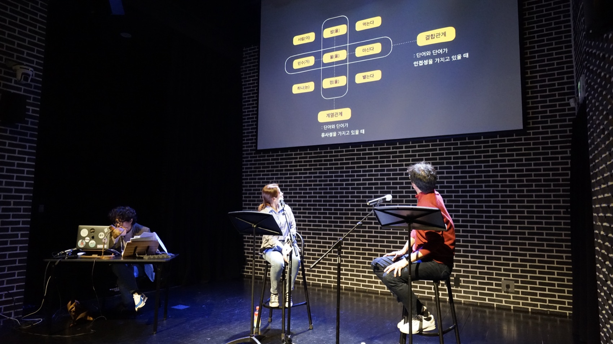
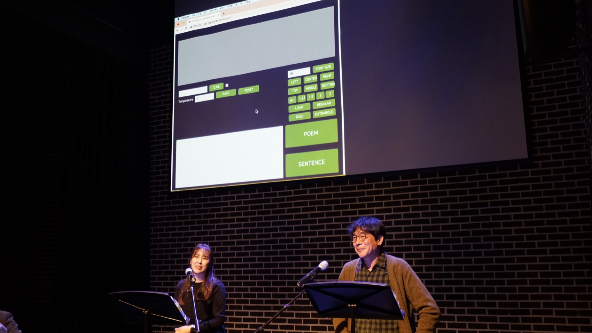
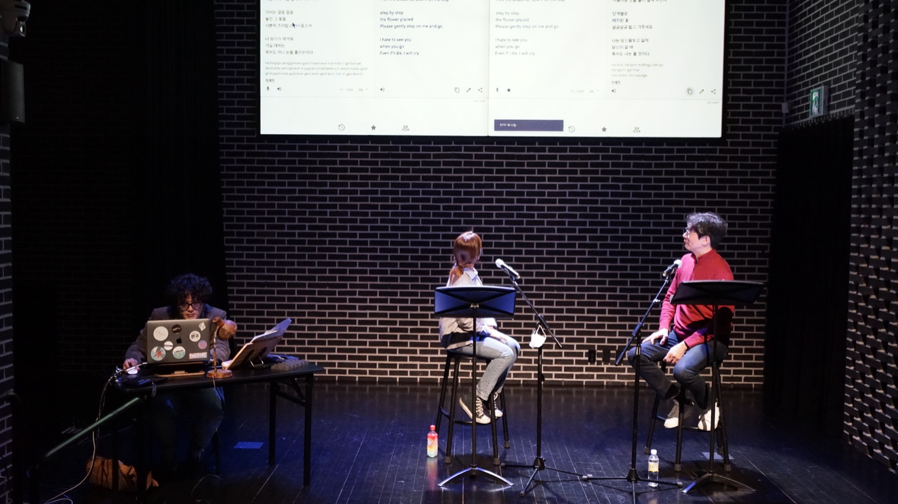
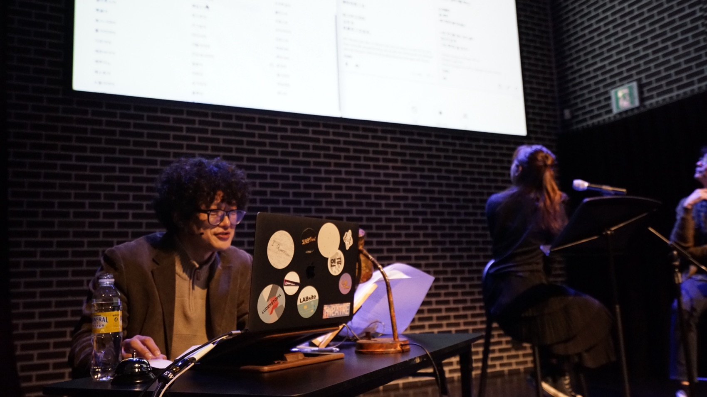
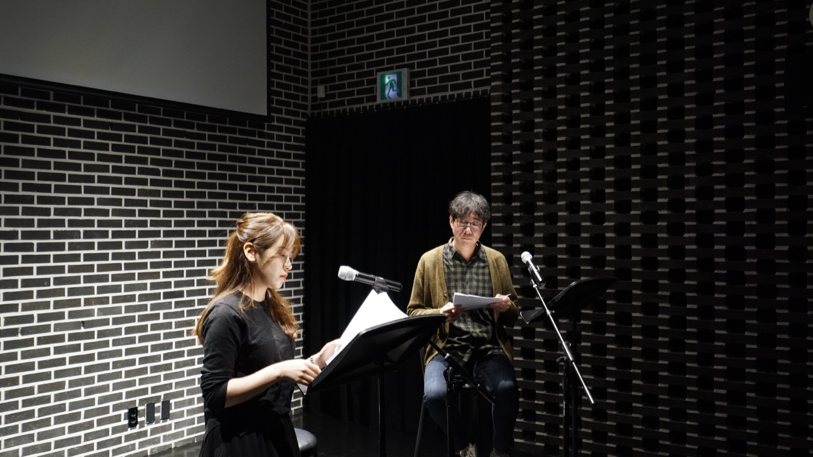
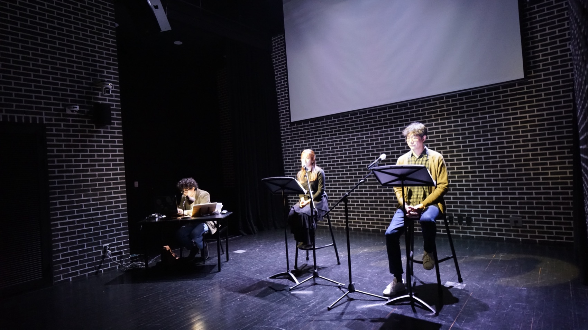
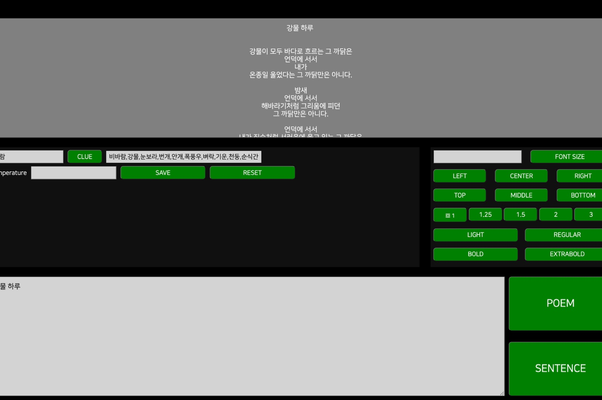

Performance — 2021
The Child Who
Writes Poetry시작하는 아이 · 시 쓰는 인공지능 ‘시아’와 함께
‘시란 무엇인가’를 아홉 번 되묻는 렉처 퍼포먼스. 연출가와 두 배우가 무대 위에서 시를 실험하고, 마지막에 시 쓰는 인공지능 ‘시아’가 도착한다.
A lecture performance that asks ‘what is a poem?’ nine times over. A director and two actors experiment with poetry onstage — and at the end, the poetry-writing AI ‘SIA’ arrives.
공연은 시 쓰는 인공지능을 만들어보자는 데서 출발했습니다. 그러나 무대에 먼저 오르는 것은 인공지능이 아니라 질문입니다. 연출가 김제민이 직접 무대에 서서 관객에게 말을 건네고, 두 배우와 함께 ‘시’를 여섯 번 다르게 실험합니다. 번역기에 시를 계속 돌려보고, 사전에서 낱말의 정의를 끝없이 따라가 보고, 문법의 오류가 시작되는 경계를 찾아보고, 잠든 밤에 손이 먼저 움직이는 글쓰기를 보여주고, 희곡이 아니라 삶에서 주워온 문장들로 리딩을 합니다. 매 실험 끝에 같은 물음이 되풀이됩니다 — “그것도 한 편의 시가 되지 않을까요?”
그 질문들이 쌓인 뒤에야 시아가 등장합니다. 인간이 시의 가장자리를 여섯 번 더듬어 본 다음에 도착하는 인공지능은, 답이 아니라 또 하나의 질문으로 놓입니다. 공연은 이세돌과 알파고의 대국 사진으로 끝맺습니다 — 바둑을 달리 부르는 말 수담(手談), 손으로 나누는 대화. 우리는 인공지능을 이겨야 할 상대로만 보고 있는 것은 아닌지 되묻고, 시아와 오래 대화를 나누겠다는 약속으로 무대를 닫습니다.
The project began with an attempt to build an AI that writes poetry — yet what takes the stage first is not the machine but the question. Director Kim Jae Min stands onstage and speaks directly to the audience, running six different experiments on ‘poetry’ with two actors: pushing a poem through translation engines again and again, chasing a word’s dictionary definition endlessly, hunting for the border where grammar begins to fail, showing a writing in which the hand moves before the head, and reading not from a play but from sentences gathered out of daily life. After each experiment the same refrain returns — “Couldn’t that be a poem too?” Only once those questions have accumulated does SIA appear: an AI that arrives after the human has felt along the edges of poetry six times, offered not as an answer but as another question. The performance closes on a photograph of the Lee Sedol–AlphaGo match and the old other name for Go — sudam (手談), a conversation held with the hands — asking whether we see AI only as something to defeat, and promising a long conversation with SIA instead.
- 연출·구성
- Direction
- Kim Jae Min 김제민
- AI 개발
- AI development
- Kim Geun Hyung 김근형
- 출연
- Performers
- 박윤석 · 윤종은
- 지원
- Support
- 한국문화예술위원회 예술과기술융합 지원사업
- Arts Council Korea — Art & Technology Convergence
- 시리즈
- Series
- The Child Who Writes Poetry (2021) → Paphos (2022) → Paphos 2.0 (2023)
- 키워드
- Keywords
- AI poet SIA · lecture performance · language space · sudam
공동창작자 — 시를 쓰는 인공지능
Co-creator — an AI that writes poetry
시아 SIA
시아는 2021년 슬릿스코프에서 태어난, 시를 쓰는 인공지능입니다. 인터넷 백과사전과 뉴스를 읽으며 한국어를 익히고, 한국 근현대시 약 1만 2천여 편을 읽으며 시 쓰는 법을 배웠습니다. 시의 제목을 입력하면 20~30초가 걸려 한 편의 시를 씁니다. 이름 ‘시아’는 ‘시작(詩作)하는 아이’에서 왔습니다.
SIA was born at Slitscope in 2021 — an artificial intelligence that writes poetry. It learned Korean by reading online encyclopedias and news, and learned how to write by reading some 12,000 modern and contemporary Korean poems. Give it a title and it takes 20–30 seconds to write a poem. The name ‘SIA’ comes from ‘the child who makes poems’ in Korean.
공연에서 시아는 마지막 두 장면에 등장합니다. 배우들이 시아의 시를 낭독하고, 이어서 관객이 직접 제목을 던지면 시아가 그 자리에서 시를 씁니다. 시아가 학습한 시를 그대로 되뇌는 순간까지 포함해, 생성의 과정 전체가 무대에 그대로 노출됩니다. 마지막 시는 시아가 자기 이름으로 쓴 시입니다.
SIA enters in the final two scenes: the actors read its poems, then audience members call out titles and SIA writes on the spot. The whole process is left exposed onstage — including the moments when SIA simply echoes a poem it once learned. The last poem is one SIA wrote on its own name.
- 슬릿스코프
- Slitscope
- 김제민(연출·미디어아트)과 김근형(AI 연구·개발)이 2018년 <I Question>에서 만나 결성. 양자역학의 이중슬릿 실험에서 따온 이름으로, ‘우리가 알지 못하는 미지의 틈새를 들여다본다’는 뜻입니다.
- Formed when Kim Jae Min (direction, media art) and Kim Geun Hyung (AI research) met on <I Question> in 2018. Named after the double-slit experiment in quantum mechanics — to look into the unknown gap.
- 함께 만든 인공지능
- Other AIs
- I Question · MADI (dance) · Ludenstopia (space) · SIA (poetry)
구성 — 아홉 개의 장면, 하나의 후렴
Structure — Nine scenes, one refrain
“그것도 한 편의 시가 되지 않을까요?”
“Couldn’t that be a poem too?”
매 실험이 끝날 때마다 연출은 관객에게 같은 질문을 되돌려준다. 답은 끝내 주어지지 않는다.
After every experiment the director returns the same question to the audience. An answer is never given.
01
첫
First
2008년, 시인 황지우가 회의 석상을 주먹으로 내리치며 던진 말 — “시심(詩心)을 가지세요.” 그 말의 뜻을 아직도 모른 채, 연출은 배우들에게 ‘첫’이라는 제목으로 시를 써 오라는 과제를 낸다.
In 2008 the poet Hwang Ji-woo pounded the meeting table: “Have a poet’s heart.” Still not knowing what it meant, the director asks the actors to write a poem titled ‘First.’
02
시를 번역하기
Translating a Poem
시를 번역기에 넣고 영어 — 시아어 — 태국어 — 터키어로 계속 돌린다. 돌아온 문장은 더 이상 원래의 시가 아니다.
A poem is run through translation engines again and again — English, Thai, Turkish. What returns is no longer the poem that left.
03
사전의 정의
The Dictionary
‘삼’은 이에 일을 더한 수, ‘이’는 일에 일을 더한 수, ‘일’은 자연수의 맨 처음 수… 끝내 ‘0’은 값이 없는 수. 말은 스스로를 증명하지 못하고 다른 말에 기댄다. “언어는 자기가 만든 감옥에 갇혀 있다.”
Three is two plus one, two is one plus one, one is the first natural number… and zero is a number without value. Words cannot prove themselves; they lean on other words. “Language sits in a prison of its own making.”
04
언어공간
Language Space
소설가 김태용의 말 — “오류의 경계에서 시가 써진다.” 가로축 결합관계(인접성), 세로축 계열관계(유사성)로 짜인 언어공간을 구글시트 위에 펼쳐놓고, 그 원리에서 일부러 벗어나 본다.
From the novelist Kim Tae-yong: “Poetry is written at the border of error.” A language space — syntagmatic across, paradigmatic down — is laid out on a Google Sheet, then deliberately broken.
05
하루의 끝과 시작
The End and Start of a Day
하루가 끝났는데 하루가 시작되는 느낌의 시간. 머리로 떠올리기 전에 손이 먼저 움직이는 자동기술의 글쓰기를 3년째 이어오고 있다. 규칙은 단 하나 — 아내가 잠들면 쓴다.
That hour when a day has ended yet seems to begin. For three years, an automatic writing where the hand moves before the mind — with one rule: write once my wife has fallen asleep.
06
삶의 리딩
Reading from Life
희곡이 아니라 삶에서 주워온 문장으로 리딩을 한다. 지하철 안내방송, 안전 문구, 코로나 안내문… 한 남자와 한 여자의 대사는 끝내 만나지 않고 서로 비껴간다.
Not lines from a play but sentences gathered from life — subway announcements, safety notices, pandemic signage. A man’s and a woman’s lines never quite meet; they slip past each other.
07
시아의 낭독
SIA Reads
비로소 시아가 소개된다. “시는 쓰기의 시학이 아니라 읽기의 시학”이라는 말과 함께, 배우들이 시아의 시를 낭독한다.
SIA is finally introduced. “Poetry is a poetics not of writing but of reading” — and the actors read SIA’s poems aloud.
08
관객과 함께 짓기
Writing with the Audience
관객이 제목을 부르면 시아가 그 자리에서 시를 쓴다. 네다섯 번 되풀이되는 동안, 생성의 실패까지 무대 위에 그대로 남는다.
Audience members call out titles and SIA writes on the spot — four or five times over, its failures left onstage along with the rest.
09
수담 手談
Sudam 手談
이세돌과 알파고의 대국 사진. 바둑의 다른 이름은 수담 — 손으로 나누는 대화다. 우리는 인공지능을 이겨야 할 상대로만 보고 있지 않은가. 시아가 자기 이름으로 쓴 시를 끝으로 공연은 닫힌다.
A photo of Lee Sedol and AlphaGo. Go’s other name is sudam — a conversation held with the hands. Have we seen AI only as an opponent to beat? The performance ends with a poem SIA wrote on its own name.
기록 — 시집
Record — the poetry collection
시집 『시작하는 아이』
The poetry collection
공연과 함께 시아의 시를 묶은 시집이 출간되었습니다. 인공지능이 쓴 시를 사람이 고르고 배열하는 과정 자체가 또 하나의 공동창작이었습니다. 아래는 시집 뒷표지에 실린 시입니다.
A collection of SIA’s poems was published alongside the performance — the human work of selecting and sequencing an AI’s poems being itself another act of co-creation. Below is the poem printed on the back cover.
함께 쓰는 시
쓸까 말까 망설이는 사이에 흰 밥알이 들어갔다 이 밥알을 모아 두 손을 위에 얹고 천천히 조금만 쓸까 연필이 딱딱해지도록 네가 쓴 시를 함께 쓸까 글쎄 글쎄 글쎄 아무도 모르게 열고 닫는 문을 조금만 더 바라보다가 어느새 담장 너머 풀밭 세상으로
공연 기록 — 신촌문화발전소, 2021
Performance record — Shinchon Cultural Power Plant, 2021





